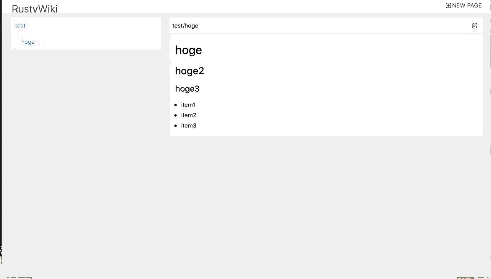
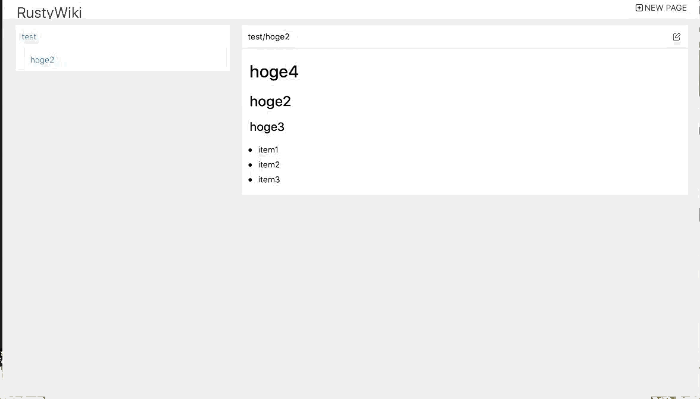

Webクライアントサイドとサーバーサイド両方Rustで書く
yew と gotham を使って、クライアントサイド、サーバーサイド両方Rustで書かれたWikiを作ってみる。
yewについて
Rustはwasmやasm.jsに変換できるので、ブラウザ上で動作するいろいろなライブラリも作られはじめている。このyewもその一つだ。
“Yew is a modern Rust framework inspired by Elm and ReactJS.” ということで、確かに、ElmやReactのような書き方ができる。
- パーツをComponentにまとめることができる。
- 状態を管理する部分と、イベントをうけて状態を変更する部分を分離して記述できる。
- JSXライクなviewの書き方ができる。
gothamについて
こちら で紹介されているのを目にして知った。いくつかRust製のWebアプリケーションフレームワークはあるが、これは非同期かつマルチスレッドで、Stable主義とのこと。
作るもの
題材として、簡単なwikiを作ることにした。シンプルかつフォームの入力やページ遷移がそれなりにありそう、というところが理由だ。
要件的には以下のようなものを考える。
- 記事はMarkDownで記述したものを自動的にHTMLで表示する。
- 特に閲覧や編集権限は考えない。
- デザインも特に凝らない。
- mini.cssという手軽そうなCSSフレームワークがあったのでそれを使用する。
- 記事へのリンクは
A/Bのようにテキストで書くとカテゴリAの配下のBという記事、という階層表示ができるようにしたい(esaライクなもの)。
実装概要
ここからは軽くコードの説明をする。
コードは yoshitsugu/rusty_wiki として公開しているので興味があればそちらも参照のこと。
バックエンドを作る
まずはwikiのページのCRUD操作用のAPIを作る。
DB準備
データ保持には diesel を使用する。こちらは自分が普段使っているRuby on Railsのコミッターが作っていたりして、使い勝手に親近感がわくORMだ。
// テーブルに保持されている内容に対応するstruct
#[derive(Queryable, Serialize, Deserialize, Debug)]
pub struct Post {
pub id: i32, // ユニークキー
pub title: String, // wiki記事のタイトル
pub body: String, // wiki記事の中身(MarkDown形式)
pub body_html: String, // wiki記事の中身(bodyから変換したHTML形式)
pub published: bool, // 公開フラグ。結局今のところ使ってない
}
#[derive(Insertable, AsChangeset, Serialize, Deserialize, Debug)]
#[table_name = "posts"]
pub struct NewPost {
pub title: String,
pub body: String,
pub body_html: String,
pub published: bool,
}サーバーサイドのコード
こちらをgothamのhandlerから扱うようにする。長いので全部は載せないが、例えば、idからpostをとってくる GET /posts/:id のAPI用のhandlerは以下のようになる。
pub fn show(state: State) -> (State, Response) {
let res = {
let path_params = PostPathExtractor::borrow_from(&state);
let connection = establish_connection();
let result = posts
.filter(published.eq(true))
.find(path_params.id)
.first::<Post>(&connection);
match result {
Ok(post) => {
let serialized = serde_json::to_string(&post).unwrap();
create_response(
&state,
StatusCode::Ok,
Some((
String::from(serialized).into_bytes(),
mime::APPLICATION_JSON,
)),
)
}
Err(err) => {
println!("{:?}", err);
create_response(
&state,
StatusCode::NotFound,
Some((
String::from("{error: not_found}").into_bytes(),
mime::APPLICATION_JSON,
)),
)
}
}
};
(state, res)
}gothamではルーティングの設定は以下のように書ける
fn router() -> Router {
build_simple_router(|route| {
route.get("/posts/:id").with_path_extractor::<posts_handler::PostPathExtractor>().to(posts_handler::show);
})
}なお、MarkDownからHTMLを生成するところは rust-pandoc という Pandoc のWrapperを使うことにした。Pandoc自体はこのブログの生成にも使っている。
クライアント側を作る
おおまかな流れ
こちら のcounterのサンプルなどを見てもらうとわかるが、基本的にyewでは以下の構成要素から成る。
- 状態を管理するstruct(このサンプルでは
Modelというstruct) - 状態を変更するイベント(このサンプルでは
Msgというenum) - イベントの実装(
impl Component for Modelしているところ) - レンダリングするview(
impl Renderable for Modelしているところ)
Componentの下にさらにComponentを作りたい場合は上の1-4をさらに1セット作っていく感じになる。
wiki記事の表示
まずはwiki記事をAPIから取得して表示してみる。部分的だが以下のようなコードになる
pub struct Context {
pub web: FetchService,
}
impl AsMut<FetchService> for Context {
fn as_mut(&mut self) -> &mut FetchService {
&mut self.web
}
}
pub struct Model {
ft: Option<FetchTask>,
post: Option<Post>,
}
pub enum Msg {
FetchReady(Result<Post, Error>),
FetchData(i32),
Ignore,
}
impl<CTX> Component<CTX> for Model
where
CTX: AsMut<FetchService> + 'static,
{
type Msg = Msg;
type Properties = ();
fn create(_: Self::Properties, _: &mut Env<CTX, Self>) -> Self {
Model {
fetching: false,
post: None,
ft: None,
editing: false,
menu_updated: false,
}
}
fn update(&mut self, msg: Self::Msg, env: &mut Env<CTX, Self>) -> ShouldRender {
match msg {
Msg::FetchData(num) => {
self.fetching = true;
self.editing = false;
let callback = env.send_back(|response: Response<Json<Result<Post, Error>>>| {
let (meta, Json(data)) = response.into_parts();
if meta.status.is_success() {
Msg::FetchReady(data)
} else {
Msg::Ignore // FIXME: Handle this error accordingly.
}
});
let request = Request::get(format!("http://{}/posts/{}", API_HOSTNAME, num))
.body(Nothing)
.unwrap();
let fetch_service: &mut FetchService = env.as_mut();
let task = fetch_service.fetch(request, callback);
self.ft = Some(task);
}
Msg::FetchReady(response) => {
self.fetching = false;
self.editing = false;
self.menu_updated = true;
self.post = response.ok();
}
Msg::Ignore => {
let console_service: &mut ConsoleService = env.as_mut();
self.post = None;
console_service.log("Ignore");
}
}
true
}
}updateのMsg::FetchDataの部分のように、callback処理が書ける。
フォームのsubmitの場合も、同じように Request::post を使用すればよい。
子コンポーネントから親コンポーネントの値を変更する
子コンポーネントから親コンポーネントの値を変更するためには、親から子を呼び出す時にコールバックを渡してやればよい。
たとえば、親から
html! {
<PostForm: post=value.to_new_post(),
oncancel=|_| Msg::SetEditing(false),
onsubmit=|new_post| Msg::PutData(new_post),
/>
}のように呼び出すと、子側で
// updateの中
Msg::OnCancel => {
if let Some(ref mut cb) = self.oncancel {
cb.emit(());
}
}
// viewの中
<button onclick=|_| Msg::OnCancel,>{ "cancel" }</button>のようにしてあげれば、cb に Msg::SetEditing(false) がわたってきて、無事に親の Msg::SetEditing(false) が発火する。
動作確認
実際に手元で動かしている様子を載せる。
- 新規作成

- 編集

- 削除

まとめ、感想
- Rustでクライアントサイド、サーバーサイド両方を書いた。
- yewは思ったよりはまともに動いて、普通に開発できた。
- Rustのコンパイラで検出できるところはデバッグも簡単だった。しかし、コンパイル時に検出できないがブラウザで動かすとエラーになる場合があり、その時は意味不明なエラーしかでてこず、デバッグが大変だった。
- 今回のような、いわゆるSPAを作っているとRouterがほしくなるが、まだyew公式のRouterはないようだ。このPRがとりこまれれば、使えるようになるかもしれない。
- gothamはあまり非同期、マルチスレッドという特徴を活かせる題材ではなかったため、メリットがまだよくわかっていない。ただ、普通にWebアプリケーションフレームワークとして活用するのも問題ないように思えた。
- コードは yoshitsugu/rusty_wiki としてGitHubに公開している。